微软家的宇宙第一ide：visual studio已经更新到了2019版，芒果也更新尝鲜了一遍，体验还不错，建议更新尝尝鲜。芒果顺便使用vs2019编译了一遍opencv,编译过程也非常顺利，以下使用vs2019编译opencv的步骤。
本次编译的环境与工具为：
软件安装过程芒果就不再赘述了，可以自行谷歌或者百度安装。建议在安装git和cmake的时候将软件的环境变量添加到系统设置内（安装向导一般会有一个add ... to Path ...之类的选项，注意查看将选项勾上就ok)。
源码可以到github的opencv项目上可以直接下载，在github下载好代码压缩包解压就行。这里给出项目地址opencv项目地址。芒果这里直接使用git命令直接clone下来，如果你安装了git,也可以和芒果一样操作下载源码。
输入命令
git clone https://github.com/opencv/opencv.git然后等待下载完成,过程如下所示
PS D:\OpenCVSourceCode> git clone https://github.com/opencv/opencv.git
Cloning into 'opencv'...
remote: Enumerating objects: 69, done.
remote: Counting objects: 100% (69/69), done.
remote: Compressing objects: 100% (57/57), done.
remote: Total 255212 (delta 13), reused 23 (delta 10), pack-reused 255143
Receiving objects: 100% (255212/255212), 458.96 MiB | 6.98 MiB/s, done.
Resolving deltas: 100% (178154/178154), done.
Checking out files: 100% (5851/5851), done.
PS D:\OpenCVSourceCode>通过这种直接拉取opencv源码仓库的方式下载的是最新的opencv源码，也就是说此刻编译好的opencv将会是比官方发布最新版本还要新的专属最新版opencv。
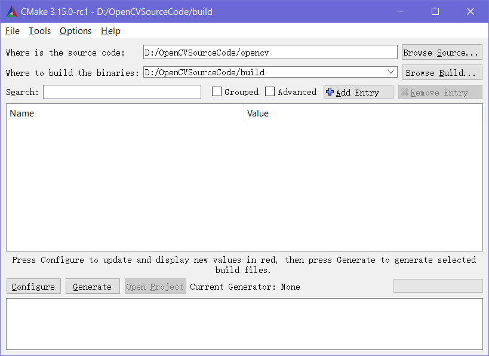
如图，首先使用cmake打开下载的opencv源码，接着新建一个存放构建文件的文件夹，使用cmake打开。
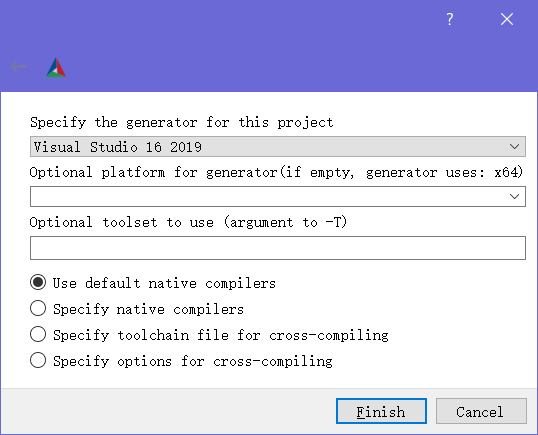
点击configure，如图选择2019的构建方案。
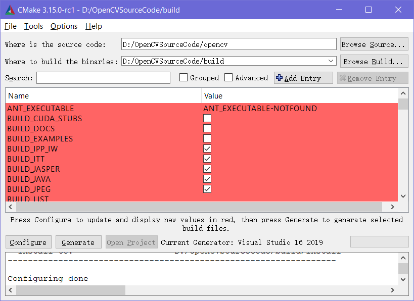
点击配置configure一遍后，会出现红色的提示。是不是报错了呢，非也。不用慌，注意看会发现软件其实有提示的，只不过是英文的而已，按照提示再次点击一遍configure就好了。
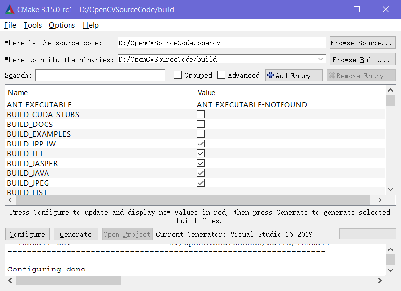
再次配置后，红色提示就没了，此时如果注意看提示，正常的话就像途中的configuring done的提示。
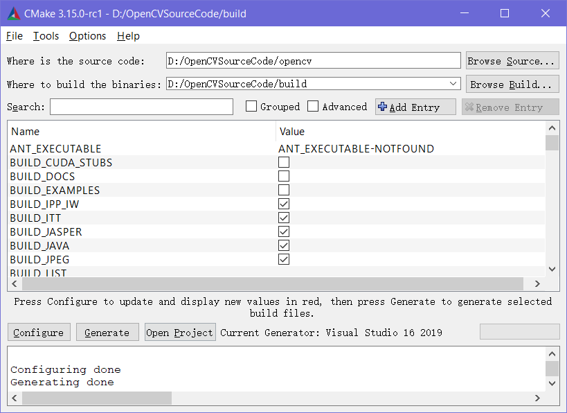
点击generate，正常生成后会有图中的提示。
configuring done
genereating done在上一步生成解决方案完成后，点击软件的Open Project就可以打开解决方案。注意电脑中如果有多个版本的vs,打开的时候注意选择vs2019打开。也可以到第一步设置构建文件路径哪里找到方案所在位置，一个名为OpenCV.sln的文件。
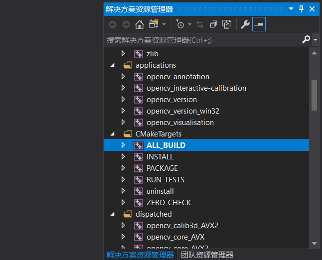
打开解决方案后，找到All_BUILD项目，鼠标右键生成。等待一会后，即可编译完成。
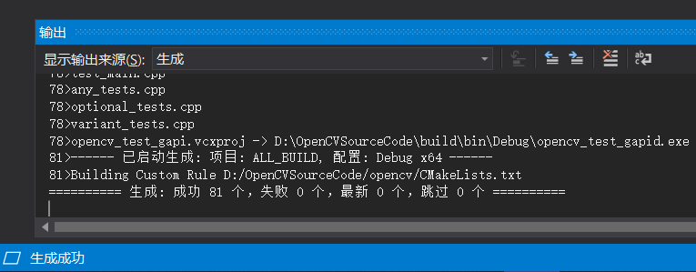
如图，正常编译完81个项目。
右键生成INSTALL项目，完成后提示
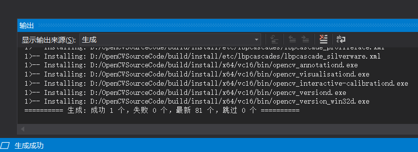
到此已经完成了编译过程。编译完成的文件，可以在install文件夹里找到。如图
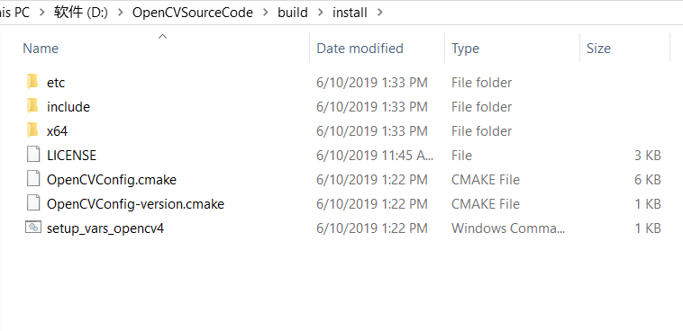
打开install文件可以看到编译好的opencv.
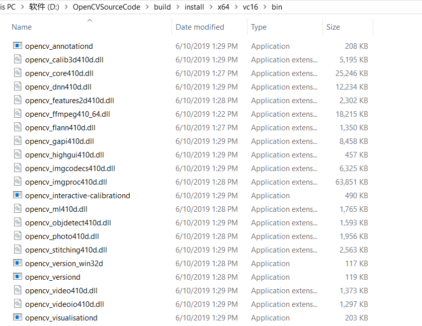
打开bin文件夹可以看到，动态链接库文件。
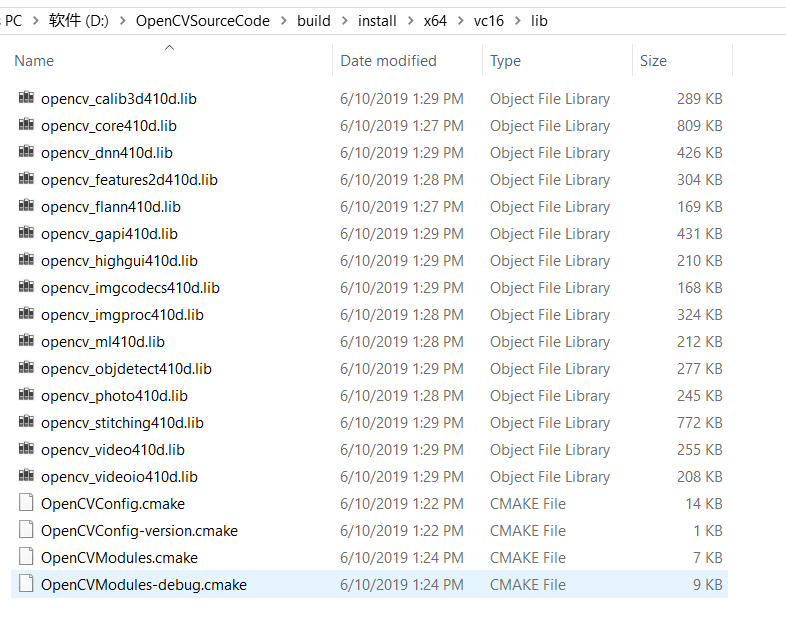
lib文件夹为静态链接库文件。
可以注意到的是，这些链接库文件在opencv的版本号之后都带着一个字母d,这是debug的意思。因为咱们之编译了debug的版本，假如需要编译release版本，重新打开OpenCV.sln，修改项目为release再编译即可。
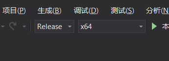
按照步骤编译，整个过程应该非常顺利的，其实使用cmake编译第三方库都是一个通用的流程，总结下来就是归为：
本文由芒果浩明发布，转载需注明来源。
本文链接：https://mangoroom.cn/opencv/vs2019-compile-opencv.html